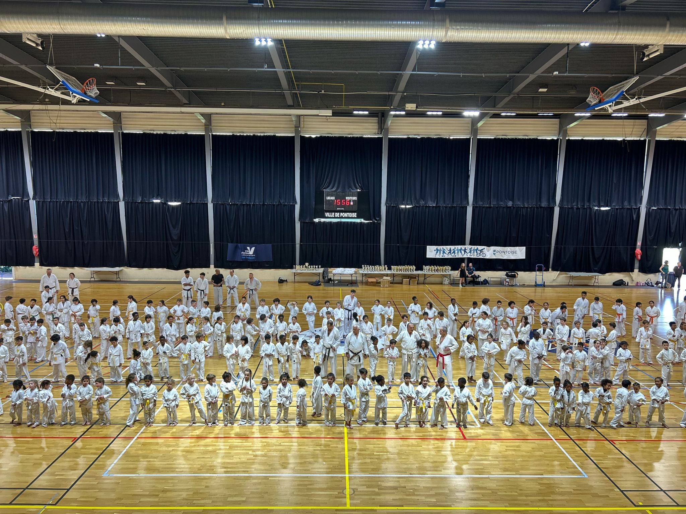
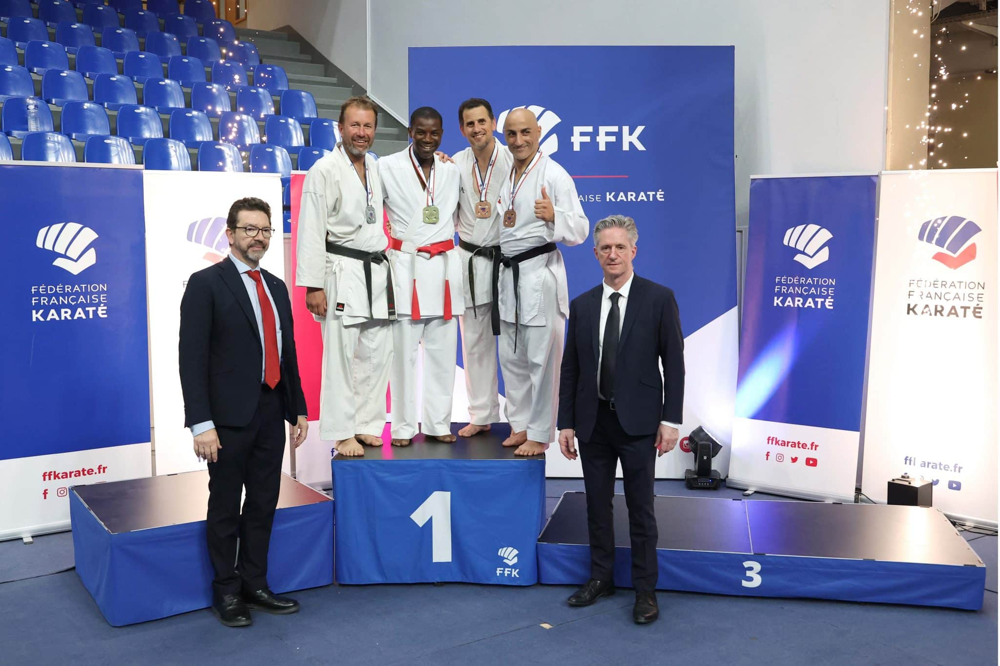
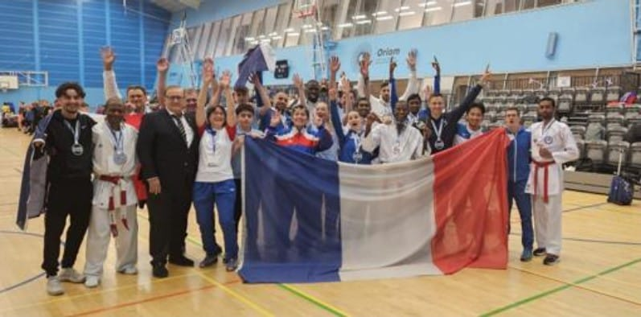

Événements Passés

Passage de grade 1er dan
Date: 28 juin 2025
Lieu : Gymnase de la Bussie, Vaureéal
Les 10 élèves présent ce samedi ont réussi avec brio leur passage de grade 1er dan passé au club. Nous remercions les différents jurys présents ainsi que le professeur du club !! Félicitations encore à tous les karatékas présents !

Compétition Inter-Clubs
Date: 22 juin 2025 à 09h00
Lieu : Gymnase des Toupets, Vauréal
Venez encourager nos jeunes talents lors de la compétition inter-clubs. Un événement convivial pour tester les acquis et partager un bon moment autour du karaté.
Vous pouvez retrouver quelques images sur la galerie.
Voir la Galerie
Masterclass à Pontoise
Date: 5 et 6 avril 2025
Lieu : Gymnase Philippe-Hémet, Pontoise
Cet événement, dédié à l'approfondissement des techniques et à la philosophie des arts martiaux, a rassemblé des passionnés de tous niveaux désireux de pousser leurs limites.
Voir la Galerie
Championnat de France vétéran 2025 : Une Victoire Éclatante !
Date: de 7 au 9 juin 2025
Lieu : Tournefeuille, en Haute-Garonne
Nous sommes très fiers d'annoncer les excellents résultats de notre club lors du récent Championnat de France Vétéran 2025.
Un grand bravo et toutes nos félicitations à notre athlète, Jupiter Estime, qui a brillamment représenté notre dojo et a décroché la 1ère place de sa catégorie !
Cette performance exceptionnelle est le fruit d'un travail acharné, d'une détermination sans faille et d'un talent incontestable. Nous sommes très fiers de compter un champion de France parmi nous !
Félicitations encore une fois à Jupiter Estime pour cette magnifique victoire !

Championnat d'Europe Wado
Date: du 1er au 3 novembre 2024
Lieu : Édimbourg, en Écosse
Nous tenons à féliciter chaleureusement tous les athlètes engagés lors du récent Championnat d'Europe Wado pour leur dévouement et leurs performances exceptionnelles.
Nous sommes particulièrement fiers de mettre en lumière nos trois athlètes qui se sont distingués :
• Thomas Nguyen : Il termine à une remarquable 5ème place dans la catégorie Kata.
• Freddy NARANIN : Il monte sur le podium en décrochant une brillante 3ème place.
• Jupiter Estime : Il est sacré Champion d'Europe en terminant à la 1ère place de sa catégorie !
Encore toutes nos félicitations à nos athlètes pour ces résultats magnifiques qui font honneur à notre club !